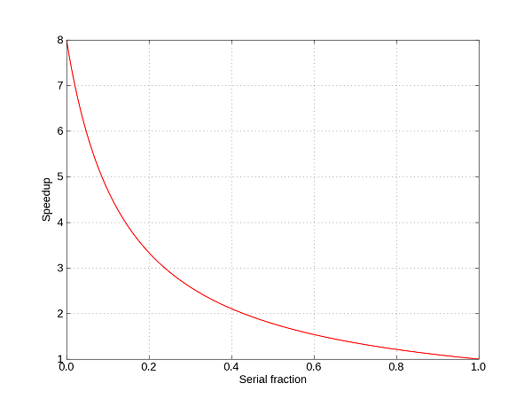

Abstract
In this tutorial we introduce general principles of parallel programming with an emphasis on task-based parallel programming models. We first introduce scaling as a metric of evaluating the potential speedup that an algorithm can obtain. Then we discuss different parallel programming paradigms and a number of optimizations for parallel code. We illustrate our discussion with examples using the MARE programming model.
Parallel Speedups
Amdahl[2] put forward an argument that the maximum speedup that can be obtained by a parallel algorithm is bounded by the serial fraction of the program. Intuitively, even if we could execute the parallel fraction infinitely fast (zero time), the serial fraction will determine the total execution time. This argument, commonly known as Amdahl's Law, can be summarized by the following equation, when considering \(N\) parallel processors:
\[Parallel Speedup = \frac{s + p}{s + p/N} = \frac{1}{s+p/N},\]
where \(s + p = 1\), representing the serial and parallel fractions of the program, respectively. Using Amdahl's law, the speedup that can be obtained with 8 processors as a function of the serial fraction is illustrated in Figure Amdahl.

Theoretical speedup on 8 processors using Amdahl's law
Note that even if the serial fraction is only 10%, the maximum theoretical speedup achievable is 4.58. In practice, however, hardware architecture characteristics, such as caching, allow programmers to obtain much better performance from multicore systems. Amdahl's law expresses performance increase for constant problem size ( strong scaling). Gustafson[11] demonstrates that parallel processing can be used to perform more work in the same amount of time by increasing the problem size, thus improving scalability. We call this technique weak scaling. Architectural artifacts[13] also play an important role; additional processors come with additional cache and memory resources, often enabling applications to obtain super-linear speedup. We shall discuss a number of optimizations that take advantage of architectural features in Section Optimizations.
Parallel Programming Paradigms
When discussing parallel programming, practitioners classify the different types of parallelism loosely following machine organizations[8] :
- Data parallelism (SIMD): SIMD machines include vector units, array processors, and GPUs. In this model, the program is executing the same code on different data elements. Data parallel algorithms are typically expressed as operations on a multi-dimensional array. Control flow is uniform; however, operations on certain elements may be masked out. Image processing algorithms are prototypical for data parallelism. In the current version of MARE, one can exploit data parallelism by using vector intrinsics[18] to target the NEON units, or by calling OpenGL functions to execute on the GPU. Future versions of MARE will support SIMD compute on the GPU as part of the programming model. In the code example below we show a simple example of scalar vector multiply (SAXPY) using MARE tasks and vector operations.
void saxpy(float* y, float a, float* x, int n) {
int i;
assert(n%4 == 0);
float32x4_t av = vmovq_n_f32(a);
for (i = 0; i < n; i+=4) {
float32x4_t xv, yv;
memcpy(&xv.res, x[i], 4*sizeof(float));
memcpy(&yv.res, y[i], 4*sizeof(float));
vmlaq_f32(yv, av, xv);
}
}
}
- Task parallelism (MIMD): MIMD machines are multiprocessors. In this model, different hardware execution contexts (e.g., threads, cores, processors) execute different code on different data elements. Tasks are either independent or cooperate on processing over a shared data structure. Thus, tasks may have control or data dependencies. The irregular structure of the computation complicates handling of dependencies and synchronization. Typical applications include: physical simulations, computer simulations, browsers[6], etc. Task parallelism is supported in MARE and examples are provided in the MARE user's manual[17].
- Braided parallelism: Modern machines combine CPUs and GPUs for heterogeneous general purpose computation. Recently there has been a significant increase in GPGPU (general purpose GPU) programming. The braided parallelism model combines task parallel computation with data parallel execution[9]. This unified model is used to dynamically exploit data parallelism on SIMD units and GPUs from within concurrent tasks executing on the MIMD units. Examples include gaming applications, which have many concurrent tasks (physics, AI, UI) that are composed from data-parallel computations, such as particle simulations, image processing and rendering.
- Pipeline parallelism or Streaming: Distributed processor architectures are composed of separate hardware contexts, such as Cell[15], and designed to exploit small working sets and/or algorithms with little locality. Computation organized as pipeline stages allows code to reside on each unit and the data is streamed across. The pattern of dependencies is fixed, simplyfying the parallel execution. Tuning and balancing is complicated by the predefined computation structure, and may require significant reorganization. Many algorithms are amenable to pipeline parallelism when partitioned. Examples include computer vision algorithms, search, etc.
MARE uses a task based programming model (we plan to support braided parallelism in future iterations). that encourages programmers to think in terms of abstractions that express concurrency as independent units of work. Dependencies are allowed and MARE makes it easy to express these as dynamic task graphs. The MARE programming model is embedded in the C++ language and supported by a runtime library. The entire programming model is implemented as library APIs, therefore can run on any compiler that supports the C++11 standard[5]. This design allows us to take advantage of some of the concurrency abstractions defined in the C++11 standard, such as memory model and synchronization.
To parallelize a computation using MARE, programmers need to address four aspects:
- Computation: Computation is expressed as a partially ordered task graph. Each task is an independent unit of work. In MARE tasks are created using the
mare::create_task method. Dependencies between tasks ensure the proper ordering of computation. In MARE we decouple task creation from task spawning (or launching) to allow the programmer to set up all the necessary dependencies. Dependencies are set up using the mare::after method or the operator << ). Once a task is launched (using mare::launch) the MARE runtime takes control of the task and it executes it whenever all its dependencies are satisfied and resources are available.
- Memory: MARE is supported on shared memory systems. The entire address space is visible to all tasks, following the C++11 memory model. The programmer is responsible for using appropriate synchronization primitives to protect potentially concurrent memory accesses to the same location: C++11 mutexes and locks (e.g.
std::mutex, std::unique_lock), and atomic variables and operations[5],[10].
- Synchronization: Besides memory synchronization, MARE also supports task synchronization. Programmers setup dependencies between tasks, which ensure a partial ordering of the computation. In addition, tasks can wait for launched computation to finish using the
mare::wait_for method, either individually or as a group. Task synchronization can also be implemented using C++11 condition variables (std::condition_variable).
Parallel Programming Patterns
Built upon the basic APIs to create and manage tasks, MARE supports a number of higher level parallel programming patterns. The APIs are described[17], and summarized here.
Parallel iteration is the most common pattern of expressing that the elements of a collection can be processed in parallel. MARE provides two version of this pattern mare::pfor_each, which waits at the end of the iteration for all tasks to complete, and mare::pfor_each_async which continues execution, while tasks may still be processing elements.
The method mare::pscan performs an inplace parallel prefix operation[14] for all elements of a collection. The method mare::ptransform performs a map operation on all elements of the collection, returning a new collection.
Future versions of MARE will provide more patterns, however, programmers are encouraged to define their own.
Optimizations
Beside algorithmic decomposition of work and data, a parallel program requires tuning to a specific platform to achieve optimal performance. As a general rule, the following process should be used:
- Serial tuning: The code executed by each task should be optimized using classical optimization techniques: loop optimizations, strength reduction, and cache locality optimizations.
- Synchronization tuning: Coordinating parallel execution is typically considered overhead – the program executes additional instructions that are not necessarily part of the effective work. Such overhead includes serialization in critical sections, waiting for dependencies to be satisfied and/or condition variables to be signaled, etc. A well-tuned parallel program spends most of its time executing work as opposed to managing work. However, it may be necessary to replicate computation in order to minimize synchronization.
- Parallel efficiency: A parallel execution is optimal when all the execution units are equally busy, doing minimal redundant work. Therefore it is important to balance the computation across all processors. This can be achieved by a combination of algorithmic decomposition — finer grain tasks allow better load balancing, and taking into account architectural characteristics, such as resource sharing and overhead of spawning tasks — coarser grain tasks typically incur less overhead.
In the next sections we touch briefly on some of these topics.
Cache locality
There are two types of memory reference locality, temporal locality in which program references to a given memory address are clustered together in time, and spatial locality, where program references to neighboring addresses are clustered in time[12]. Caches transparently take advantage of both types of locality: replacement policies exploit temporal locality, while wide cache lines and prefetching techniques exploit spatial locality. Moreover, current architectures provide several levels of caches, with different sharing patterns. For example, level one caches (L1) are typically split between instructions and data, and are private to a core (shared by the hyperthreads in the case of an SMT architecture), and level two caches (L2) are shared by multiple cores.
Despite programmers not having direct control over caching, code and data can be structured to improves the locality of reference, and thus making effective use of cache mechanisms[20]. In a multicore system caches are a shared resource, so programmers should consider the following:
- Consistency: Most multicore shared memory systems provide hardware coherency[12]. However, architectures implement different consistency models[1], thereby affecting the way shared memory updates are visible to different threads. In particular, the ARM architecture defines a weak memory consistency model. The C++11 standard defines primitives to enforce the ordering of memory operations for all atomic accesses. The expert programmer can exploit non-sequential consistent orderings to obtain better performance on such systems.
- False sharing: False sharing[21] arises when independent data items used by two tasks executing concurrently on two different cores are co-located in the same cache line. Because the unit of coherence is the cache line, if the items are accessed by both tasks, the line will be forced by the coherence protocol to bounce between caches. False sharing can be avoided by separating data items accessed by different concurrent tasks into separate cache lines, using techniques such as padding[19] and/or allocation to cache line boundaries. To improve locality of reference and limit memory fragmentation, programmers should group data items accessed by a single task as close as possible, preferrably in contiguous blocks of memory addresses.
- Cache interference: In serial applications cache optimizations are tuned to the entire cache. However, in a parallel application, caches are shared by execution units. A carefully tuned parallel program should maximize the utilization of the cache, by ensuring reuse of true shared data. For example, by maintaining a single copy of read-only shared data, and referencing it simultaneously, one will exploit temporal locality and minimize the amount of cache used. To minimize contention and interference, the working set sizes of the tasks should fit in the cache. Tiling and cache blocking[7],[22] parameters must be tuned considering the capacity when the caches are shared.
Many other cache locality optimizations are described in the literature.
Minimizing wait time and synchronization
As mentioned, efficient parallel execution implies balanced execution of non-reduntant work on all computing units, while minimizing management overhead. We have shown how the fraction of serial execution (Amdahl's law) limits the efectiveness of the parallel application in Section Parallel Speedups. Therefore, programmers should carefully consider different factors that serialize execution, including:
- Avoid waiting for single tasks: Long chains of dependencies, and/or often waiting for the results of single tasks, limits the level of parallelism available in applications[16]. MARE groups can be used to wait for sets of tasks, thus potentially minimizing the overall amount of stalling.
- Data synchronization: Synchronizing shared memory accesses may introduce considerable serialization or cache conflict overhead. Such overhead can be reduced by the following optimizations:
-
Privatize data[3] – mutually exclusive partitioning of shared data. For example, partitioning an image into tiles, where each task works on a different tile. In cases where the partitioning is not obvious, programmers can copy shared data into private buffers, work on the private data, and then synchronize changes to the shared copy. Parallel reductions, and parallel gather and scatter operations are helpful in reshaping the private and shared data formats.
-
Avoid large critical sections – Since critical sections guarantee mutual exclusion, they serialize the execution of tasks that are accessing these areas. Minimizing the time spent in critical sections, in particular when they are highly contended will reduce the synchronization overhead.
-
Use atomic operations – the appropriate memory ordering further reduces the synchronization overhead and relies on hardware capabilities for efficient shared data accesses.
MARE encourages an asynchronous programming style, in which fine- grained tasks are placed in a dependence graph, and thus minimizes the need for waits. By contrast, fork-join models spawn a large set of work which needs to complete before the control flows from the join. Asynchronous concurrency is also preferable in the case of heterogeneous computing since resources need not be blocked waiting for an off-load device to complete the work.
Load balancing
Serialization is one of the potential pitfalls of parallel programming. Another is the under-utilization of all compute units. If the parallel computation is unbalanced, some processors will be idle, thereby cutting into the potential performance gains. To avoid such scenarios, programmers should pay attention to balancing the work. This can be achieved in several ways, the most popular being:
- Tuning the task granularity: Task granularity represents the amount of work in a task. Ideally, if the amount of work is known, one can balance the computation manually. However, this is not the case for irregular applications, in which case, overdecomposition and relying on the MARE runtime dynamic scheduling is a better option. Task granularity also plays an important role in managing the overhead. As task granularity decreases, the overhead of managing the parallel execution becomes a larger fraction of the total time. Therefore, coarser tasks are preferred to minimize the overhead. This is an important balance that the programmers need to weigh. MARE makes it easy to explore these trade-offs by providing a set of flexible APIs to create tasks.
- Overdecomposition: Overdecomposition is the mechanism by which programmers ensure there is enough parallel work in the system, so that the runtime always has work to schedule. Overdecomposition is defined as creating more tasks than the number of computation units available, such that if a task blocks or waits for dependencies to be satisfied, other independent tasks continue to make progress. The more independent tasks are provided, the better the load balancing that can be achieved. Of course, one needs to take into consideration the task granularity and manage the overhead.
Conclusions
Parallel programming is fun and intellectually challenging. There are many factors that come into play when building a parallel application, which may not be obvious. The techniques described in this tutorial will help you reach the main goal of parallel programming — speeding up the execution of the application. MARE is designed to ease this task and provide abstractions that make it convenient to express parallel computation. The hard work of creating a parallel algorithm remains; however, MARE and these techniques will help encoding these algorithms into an efficient solution.